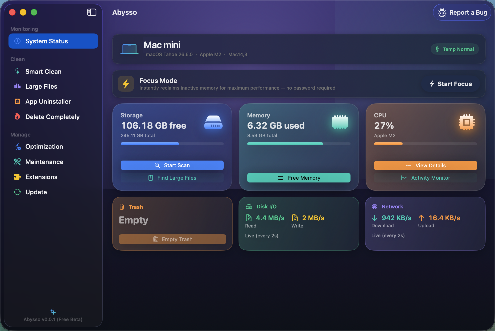
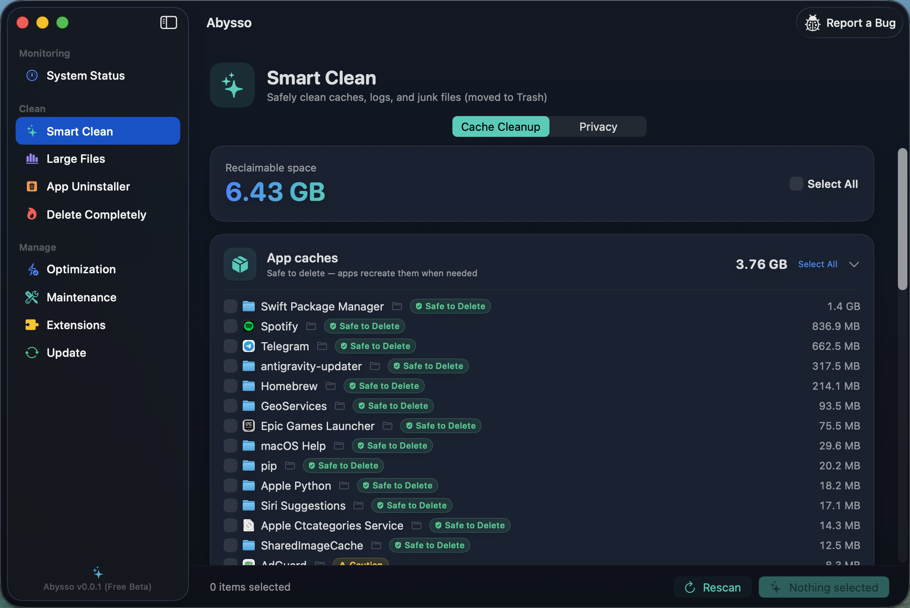
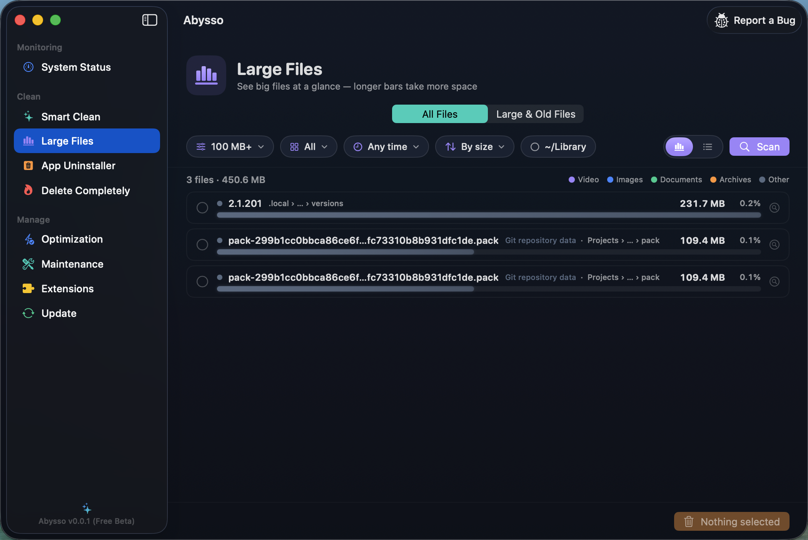
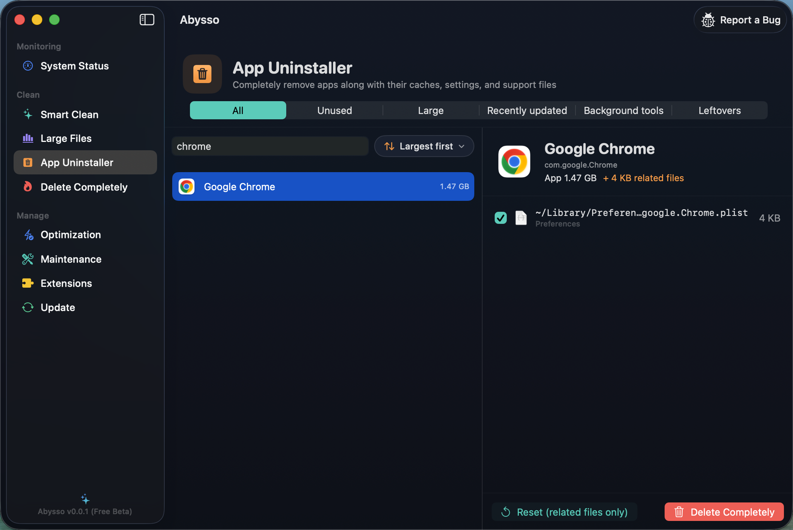
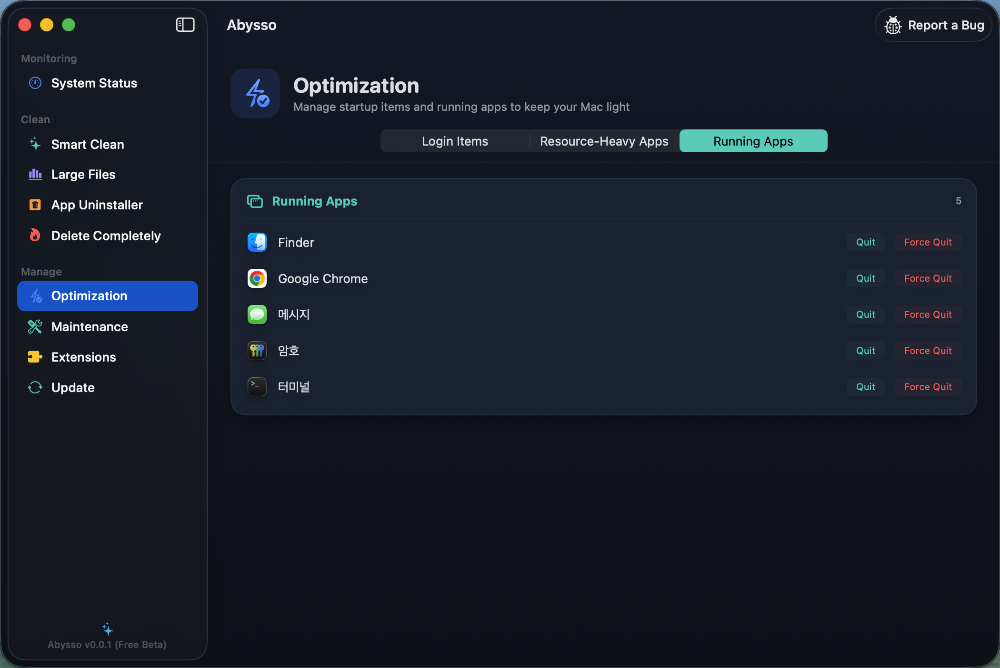

Reclaim gigabytes, remove apps completely, and keep your Mac light — fast, native, and everything stays on your device.
✨ Free — no account, no subscription required.

Everything in one place
Nine focused tools for cleaning, freeing space, and keeping macOS in shape.
Scan caches, logs, and junk by category — with safety badges so you know what's safe to delete.
See what's eating your disk as a size-ranked bar chart, and it tells you what cryptic files actually are.
Remove an app together with its leftover caches, settings, and support files — in one click.
Securely shred sensitive files with multi-pass overwrite so they can't be recovered.
Manage login items, spot resource-heavy apps, and quit what you don't need.
No account, no tracking. Everything runs locally and deletions go to the Trash, so they're recoverable.
A look inside
A calm dark interface with live system stats and one-tap cleanups.



